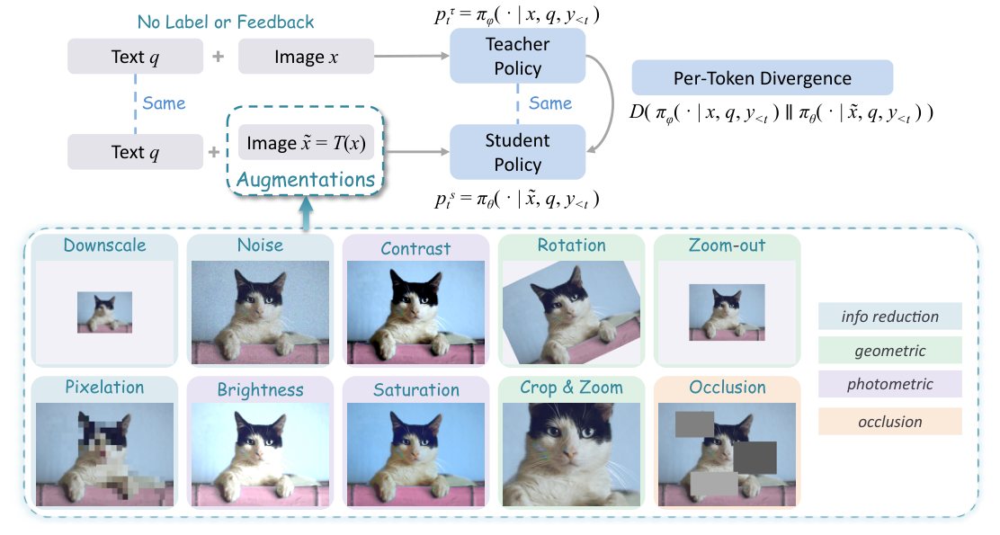
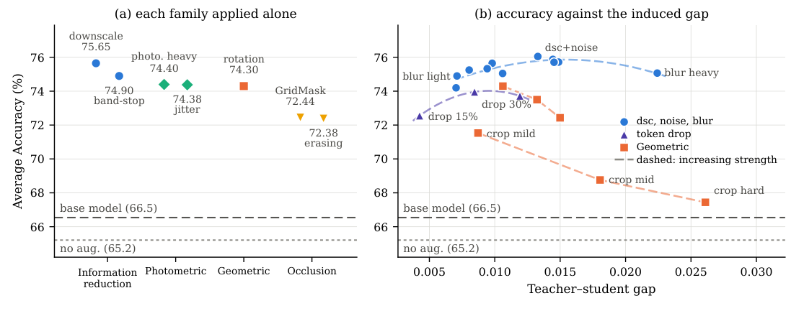

FULL NOTE · 蒸馏与训练预算
S²VOPD
Self-Supervised Visual On-Policy Distillation
一句话本质：S²VOPD 让教师看清晰图、学生看退化图，在学生自己生成的前缀上对齐分布，以视觉信息差提供自蒸馏信号。
五分钟重建
教师与学生共享模型时，需要构造有用的分布差。S²VOPD 让教师看清晰图、学生看退化图，以输入信息差提供视觉自蒸馏信号。
学生在退化图上作答
保持问题不变，降低图像信息量。学生自己生成轨迹，蒸馏沿这条轨迹进行。
教师看同一前缀
EMA 教师看原图与同样的生成前缀，计算下一 token 分布。EMA 是随学生缓慢更新的教师。
对齐分布
截取教师 top-k 支持并重新归一化，用广义 JSD 训练学生。实验中它优于所比较的两种 KL 方向。
具体例子（教学假设）：问题是“猫在左边还是右边”。轻度降采样仍保留位置关系，可以构造信息差；裁剪若直接删掉猫，就可能让问题失去所需证据。差距更大不代表监督更好。
边界：降采样也可能抹掉关键小字。增强是否保留答题信息，取决于任务。用“信息可恢复性”解释它与 U-OPSD 的散度差异，仍是待验证假说。
换个条件看机制
若教师与学生使用完全相同的权重、图像、问题和前缀，分布对齐还提供什么信息差？
在相同计算条件下，两者分布相同，散度为零。实际 EMA 权重可有差异，但此教学反例固定了权重，用来隔离输入不对称的作用。
2026-10-04：讲解与练习待试用，本次未进行理解检验；此处不记录复测通过。
论文图解


解决什么问题
OPD 家族的命门：教师必须比学生多知道点什么，否则指导没有信息量。三种传统来源全要外部资源——更大的模型（贵）、GT 答案（要标注）、GT 感兴趣区域（更贵的标注），且随模型能力超过人类能可靠提供的监督，特权信号越来越难获得。特权方法还偏科：ZwZ 在 MathVerse 掉 27.1，OPSD 在 MathVision 掉 9.3（感知涨、推理崩）。
本文的釜底抽薪之问：不对称性在乎自己是"教师多看"还是"学生少看"实现的吗？ 不在乎——只要存在"教师知道、学生不知道"的差，蒸馏信号就成立。于是把方向倒过来：给教师加特权 → 从学生身上减信息（把学生的输入图退化）。零标注、零奖励、零更强教师。
和 U-OPSD 的分工：同一作者线（Yijiang Li 一作 + Vasconcelos 组）的域互补——U-OPSD 管文本推理域（教师多看"伪解"这个文本特权上下文），本文管视觉感知域（教师多看"清晰像素"这个输入模态信息差）。U-OPSD 是首个完全无监督的 LLM 自蒸馏，本文是视觉版答案。
大白话讲解
想象你要刷一套没有标准答案的卷子。你把试卷复印得又小又糊（0.3~0.6 倍分辨率 + 噪点），自己看着糊版作答；同时"拿到清晰原版的你"盯着清晰卷，在你写下的每一步旁边标注"看清的我这里会怎么写"，你照着改。训练完上考场，发你的卷子是清晰的。
这里最容易卡住：训练看糊图、考试看好图，这不是 train-inference mismatch 吗？凭什么变强？ 关键：学生学的不是"在糊图上答题"这个行为，而是每个决策点上"信息残缺的我"如何逼近"信息完整的我"的判断。"从退化证据恢复完整判断"的能力内化后，推理时给它好图，能力只会更有用。实证：六个感知基准全用原图测，照样 +6.76。
为什么不用"练难的考简单的"来解释：如果难度本身是关键，更强的 crop（更难）应该涨更多，实际单调下跌（71.53→68.76→67.44）。难度不是本质，信息差里"教师分布在干净视图上"才是信号来源——学生单独在糊图上自练（无教师信号）不但不涨还退化（对称自蒸馏 65.21 < 基座）。
关键机制
同一模型两个身份：student θ 和 EMA teacher φ（φ ← 0.95·φ + 0.05·θ，教师是学生的"慢半拍影子"）。每个训练步五件事：
- 弄坏图：x̃ = T(x)。最佳配方（式 6）：降采样到 s~U(0.3, 0.6)（不 resize 回去，visual token 直接变少，顺带省 rollout 和前向开销）+ 以 ρ=0.5 独立叠加 DDPM 前向步 t=200 的高斯噪声（σ≈0.11，信号几乎不衰减）。全局概率 p=1（每个学生视图都增强）。
- 学生在坏图上 rollout：πθ 以 (x̃, q) 为条件采 n=8 条轨迹。on-policy：蒸馏的前缀是学生自己真正会走到的状态。
- 教师在同一前缀 + 好图上打分：πφ(·|x, q, y<t) 算 next-token 分布。
- top-k 截断：师生分布都截到教师 top-k token 再重归一化（抗词表长尾；论文未给 k 值）。
- 逐 token 广义 JSD（α=0.5），沿轨迹平均，只更新学生，EMA 回写教师。
| 图像 | 问题 q | 轨迹前缀 y<t | |
|---|---|---|---|
| 教师 πφ（EMA） | 原图 x | ✅ | ✅ |
| 学生 πθ | 坏图 x̃ = T(x) | ✅ | ✅ |
两者共享 q + y<t，教师多出来的只有"清晰的图"。对照 U-OPSD 的表：那边教师多出来的是"伪解 y+"（文本特权上下文），这边换成了像素级信息差——不对称的载体从上下文搬到了输入模态本身。
训练设置：Qwen3.5-4B/9B，vLLM rollout，batch 96 prompts × 8 rollouts，lr 2e-6，65/130 步（6K/12K 各一个 epoch）。推理直接用 student + 原图。
三条增强设计律（本文最扎实的经验贡献，首个针对 OPD 的系统化增强空间受控搜索）
- 不对称才有信号：四个增强族单用全涨（信息减少 75.65 > 光度 74.40 > 几何 74.30 > 遮挡 72.44，基座 70.58）；对称自蒸馏反而掉到 65.21。
- 强度要中等：所有族都呈倒 U 型，师生 token 级 JSD gap ≈ 0.014 处到顶。太弱没信号，太强学不动。
- gap 必须任务一致（task-consistent）：crop 单调下跌（71.53→68.76→67.44），最强 crop 造出全场最大的 gap 却成绩最差。大 gap ≠ 好 gap：crop 选择性地删掉某块区域、可能正中答题证据，题变得不可答，差距零信息量；降采样是均匀降低信息密度，全局结构都在、题原则上可答，差距可学。
结果与代价
主表（FineVision-12K 训练）：4B 从 70.68 → 77.44（+6.76），超 Qwen3-VL-Instruct-235B（75.75）、超 GPT-5.4（72.77），追平 Qwen3.5-397B（77.44），与 Gemini-3-Flash（77.67）打平；超过全部特权方法（Vision-OPD 77.07、OPSD 72.85）。
同数据公平对比（Vision-OPD-6K，65 步）：4B 总分（6 感知 + 3 数学）75.33 全场第一；9B 76.35，只比拿 GT 区域标注的 Vision-OPD（76.56）低 0.21。感知 +5.7 / 数学 +3.7（4B）。自奖励 RL（TTRL/Intuitor/RENT）训练不稳定甚至崩到近随机，报告 13 个 checkpoint 最优仍输本文 2 个点。
"恢复 96%"注：摘要声称"恢复特权方法 96% 的改进"，正文无推导。自行计算：9B 感知分上 S²VOPD 增益 3.57 / Vision-OPD 增益 3.70 ≈ 96.5% 吻合（4B 上其实反超，>100%）。
最反直觉的消融（w/o EMA）：把教师永远冻结在基座（不做 EMA），只掉 0.40（75.95 vs 76.35），仍拿 93% 增益——该消融主要支持清晰输入的信息差；不能推出 EMA 或教师更新在所有设置中都没有价值。EMA decay 0.95/0.99/0.999 波动 <0.8%，不敏感，只是稳定性选择。
散度消融（Table 6，与 U-OPSD 结论完全相反，见关联节）：JSD(α=0.5) 76.05 > reverse KL 75.49 > forward KL 74.74。
代价/局限：
- 增益依赖增强调参（gap 大小 + task-consistency 双准则）。
- OCR/文字密集图未测：blur/noise/降采样会直接毁掉图中文字这类细粒度证据，违反 task-consistency，预期失效（本人推演，论文未验证）。
- 纯文本任务没有可退化的视觉模态，方法不迁移（要另找可退化模态，如截断上下文）。
- 无 seed 重复误差棒；分析协议（2048 greedy）与主表（4096）数字不可混比，且原文 §4.3 正文引用的基座 70.58 与图 2 标注的 66.5 存在协议口径不一致（图 2 的 2048-token 协议读数更低），引用时注意。
- top-k 的 k 值未给出，需查代码。
AI 预读备注
Zotero AI Butler 两份子笔记（task=summary/table，zhipu/glm-5.3 生成，2026-08-19）做预读底稿。
AI-Butler 摘要笔记 itemKey：WAIZQ4EN（task=summary），表格笔记 itemKey：J9RDZC8L（task=table），provider/model：zhipu/glm-5.3
glm-5.3 的复现级摘要质量很高：方法 pipeline 全六步、四增强族全表、倒 U 型与 0.014 峰值、JSD/fKL/rKL 排序及理由、EMA 消融、超参敏感性、常见坑（不 resize 回去/只增强学生侧/top-k 重归一化）全覆盖，与原文逐项核对一致。本文讲解在其基础上做了四点提炼：(a) 用 crop 消融证伪"难度论"，把"学到的是向信息完整版自己对齐的蒸馏目标"这一真机制立起来；(b) 把散度排序与 U-OPSD 的差异整理成"信息可恢复性"解释假说（待验证）（见关联节）；(c) 核出摘要"96%"无正文推导并补算出处；(d) 发现 §4.3 基座读数与图 2 的协议口径不一致。表格笔记（AI-Table）信息量低，仅文献表维度，未采用。
我的复述
（费曼检验时原话保留）
- 强迫学生从模糊图/干扰图中找细节，增强了模型的探索能力，实际使用时使用清晰图难度更小了，效果肯定更好；（被 crop 消融证伪后修正为：难度的关键是向"看得清的自己"的分布对齐）
- U-OPSD 是多次 rollout 取共识作为teacher的额外为标签制造不对称，而 S2VOPD 是通过给教师清晰图学生干扰图带来不对称（"伪标签"为口误，y+ 是完整轨迹上下文）
- 最强 crop 可能把关键证据区域切没了，student 只能靠猜了输出全是幻觉，这套方法在 OCR等需要细粒度感知的任务上会失效
- 会强化模型的弱点（对称自蒸馏时：放大教师的自信错误）
再检验轮：
U-OPSD teacher 多的信息是模型本身采样的共识轨迹，这些轨迹本身就来自模型本身，采用 forward KL student 可以拟合 teacher 的分布， 而 S2VOPD 多的信息来自于看到了学生没有看到的清晰的图， 采用 forward KL student 要尽量拟合 teacher 的分布，其中就包括了 student 看不到的这些，而 reverse KL 主要是学高置信度的尖峰区域而 JSD 居中；而Crop大的话尖峰区域都没了，无从学起。（"尖峰没了"用词已纠：crop 删的是图像证据，教师分布照样有尖峰，是学生输入里没有通往答案的依据）
坏，这会导致学生去猜问题（q 被挖词的方案：猜题能力在推理时零迁移，因推理时 q 完整）
卡壳点与解答
Q：训练看糊图、考试看好图，为什么反而变强？
训练目标把学生在退化图上的下一 token 分布，拉向教师在清晰图上的分布。rollout 前缀相同，输入信息不同。该实验的 crop 越强成绩越低，所以不能简单解释为“训练越难越好”。冻结教师后仍保留约 93% 增益，主要支持清晰输入信息差的作用；它不证明 EMA 在所有任务中无效。方法学的是跨视图分布对齐，收益取决于增强是否保留答题所需的证据。
Q：S²VOPD 和 U-OPSD 的散度消融结论为什么完全相反？
先分清观察和解释。U-OPSD 的实验里 forward KL 更稳，reverse KL 出现复读崩溃；S²VOPD 的 Table 6 则是 JSD 76.05 > reverse KL 75.49 > forward KL 74.74。两套模型、数据与信息差设置不同，不能由此推出普适的散度选择规则。解释假说（待验证）：教师多出的解题上下文与清晰像素，其可恢复性不同，可能影响散度偏好。forward KL 的覆盖倾向与 reverse KL 的寻峰倾向可作直觉，但不能单凭它们证明分数差或崩溃原因。
Q：同样是"减少视觉信息"，为什么降采样涨最多、最强 crop 是大坑？
crop 会直接删去某块区域，可能删掉答题证据；降采样主要降低分辨率，在适当强度下仍可能保留全局结构。论文的增强搜索支持“gap 大还不够，增强须与任务一致”。这不保证降采样始终可答：文字与小物体也可能消失。教师在完整图上仍可有高置信分布，学生缺的是输入证据，不是教师的分布尖峰。信息可恢复性是库内解释假说，待验证。
Q：把增强换成"挖掉学生的文本问题 q 的 30% 字、图保持清晰"会怎样？
这是迁移推演，论文未测试，待验证。删除问题中的否定词或目标名，可能改变任务定义，师生便在回答不同问题。单有信息差不保证有用，应先检查剩余问题是否仍表达同一任务。不能把“推理时问题完整”直接等同于训练收益必然为零。
Q：对称自蒸馏（不增强）为什么掉到基座以下（65.21 < 70.58）？
论文在该设置观察到不增强时掉分，并解释为教师的自信错误可能被放大。EMA 教师是学生参数的历史平均，师生虽看同一张图，参数与分布仍可不同。这里缺少清晰视图相对退化视图的额外信息，不能直接推出所有对称自蒸馏都无信号或都失败。增强版的收益也要以相应任务上的消融为准。
Q（复发，2026-09-02 首验）：y+ 又说成"伪标签"了。
U-OPSD 入库时的老卡壳点本次口误复发。y+ 不是标签，是拼进教师输入的完整解题轨迹（上下文）；共识答案 ã(x) 只用来投票和分组。消融 label-only（只给 boxed 答案值）掉 10.3~15.8。（历史状态：09-02 两连犯；2026-09-07 复测已收敛，首答即明确「y+ 是完整轨迹先验上下文，不是伪标签」，当前不再是弱项。）
还没搞懂
无——检验题全部补齐，无残留漏洞。「信息可恢复性决定散度选择」是本人综合两篇论文的假说，非任一原文结论，待 DistiLLM 系列入库时验证（已挂 U-OPSD 页钩子）。
关联
- U-OPSD — 兑现其预留钩子。同作者线（Yijiang Li 一作 + Vasconcelos 组）的域互补：U-OPSD 管文本推理域（教师多看伪解 y+，文本特权上下文），本文管视觉感知域（教师多看清晰像素，输入模态信息差）。两页合起来是"不对称性来源谱系"：SFT（GT+教师强制）→ OPD（强教师）→ OPSD（GT 特权）→ U-OPSD（自投票伪特权）/ S²VOPD（自减信息）。散度冲突注记（全库最值钱交叉点）：U-OPSD 必须 forward KL（reverse 复读塌缩、JSD 掉 13.8），本文 JSD 最好 > rKL > fKL，排序完全颠倒——可用“教师多出的信息可否恢复”提出解释假说（待验证），但两套实验不能推出普适散度规律。
- Open-MOPD — OPD 家族三页成谱系：U-OPSD 管"单教师信号从哪来"（文本域），本文管"单教师信号从哪来"（视觉域的另一种答案：不对称可以来自减学生而非加教师），Open-MOPD 管"多教师信号怎么分账"。组合设想（待验证）：研究把视觉信息差接入多教师框架；本库没有联合实验。散度注记第三数据点：本文 JSD > rKL > fKL（视觉不对称蒸馏，温和差异），与 U-OPSD 的 fKL 必选、Open-MOPD 的 reverse-KL 式 dense reward（PPO reward 槽位）构成三框架对照，待 DistiLLM 系列统一沉淀。
未来入库钩子：OCR/文档理解域增强蒸馏、NoisyRollout/VPPO/PRPO（增强调 RL 的先例，本文区分点：增强差异本身是训练信号而非调制外部奖励）、BYOL/DINO/FixMatch（弱视图教强视图的自监督表征学习源头）入库时回链本页。